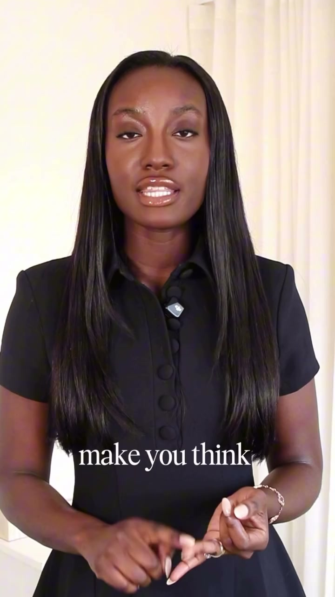

Loewe: Viral by Design
A polished, editorial social cut pairing founder-led commentary with visual references, clean captions and deliberate pacing.
Short-Form Video Editor
Independent editorSelected work 2026
Short-form stories
with a point of view.

Selected work / 01—03
Different subjects. Different energy. One goal: make the idea land.
A polished, editorial social cut pairing founder-led commentary with visual references, clean captions and deliberate pacing.
A direct-to-camera story shaped with restrained captions, supporting overlays and room for the speaker’s personality.
A widescreen workshop excerpt balancing screen content, speaker presence and a clear learning narrative.
My editing process
Start with the clearest reason to keep watching. Then make every second earn the next.
Cut the drag, keep the human beats, and build a pace that feels intentional rather than frantic.
Use captions, imagery, sound and movement only when they make the message easier to feel or follow.
Good editing isn’t about adding more.
It’s knowing what to keep.
About / Stephanie Wieland
I’m Stephanie, a short-form video editor drawn to smart ideas, human delivery and edits that know when to move — and when to let a moment land.
I work across creator content, brand storytelling and educational video, adapting the edit to the person behind it instead of pushing every project through the same formula.
Have something in the camera roll?